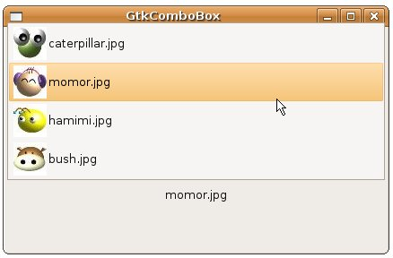

| 在 GtkComboBox 中的範例，是GtkComboBox最簡單的用法，選項只有純文字，若想要進一步讓GtkComboBox呈現更多的功能與樣貌，則必須了解GtkComboBox的Model-View設計。 GtkComboBox的外觀是View物件的部份，選項資料的部份則是Model物件的部份，GtkComboBox使用的Model物件為實作 GtkTreeModel介面的物件，例如GtkListStore或GtkTreeStore，其實作了Model物件的資料儲存與存取方式等，在這邊 先介紹GtkComboBox與GtkListStore的使用。 GtkListStore是沒有階層平坦式的資料，當下拉選單需要的是直接列示選項就可以使用，GtkListStore中可以設定文字、圖片、元件等，要建立GtkListStore，必須指明要建立幾個欄位以及欄位中的型態，例如： GtkListStore *store = gtk_list_store_new(2, GDK_TYPE_PIXBUF, G_TYPE_STRING);
這個程式片段將建立一個具有兩個欄位的GtkListStore，一個欄位儲存圖片，使用GDK_TYPE_PIXBUF來指定，欄位將儲存的是GdkPixbuf，另一個儲存文字，使用G_TYPE_STRING來指定。 您可以使用gdk_pixbuf_new_from_file()讀取圖檔並傳回其GdkPixbuf，第二個參數是GError，若不需要可以設定為NULL： GdkPixbuf *pixbuf = gdk_pixbuf_new_from_file(files[i], NULL);
GtkListStore使用GtkTreeIter作為內部的資料位置指標，當您使用gtk_list_store_append()時，會將 GtkTreeIter指向GtkListStore下一列的位置，接著您再搭配gtk_list_store_set()設定GtkListStore 該位置的欄位資料，例如： GtkTreeIter iter;
gtk_list_store_append(store, &iter); gtk_list_store_set(store, &iter, 0, pixbuf, 1, filename, -1); gtk_list_store_set()的前兩個參數分別為GtkListStore與GtkTreeIter，之後則兩兩成對指定欄位索引與資料，最後以-1作為結束。 有了GtlListStore這個Model物件之後，接著可以用以建立View，也就是GtkComboBox，您可以使用gtk_combo_box_new_with_model()來建立： GtkWidget *comboBox = gtk_combo_box_new_with_model(GTK_TREE_MODEL(store));
您的資料要如何顯示，需要對應的GtkCellRenderer來進行繪製，哪個欄位要使用哪個 GtkCellRenderer以及該欄位的一些相關屬性，則要告知GtkCellLayout，GtkComboBox有實作 GtkCellLayout介面，因此，您可以如下使用gtk_cell_layout_pack_start()設定GtkCellRenderer繪 製哪個欄位，以及使用gtk_cell_layout_set_attributes()設定相關屬性： GtkCellRender *render;
renderer = gtk_cell_renderer_pixbuf_new(); gtk_cell_layout_pack_start(GTK_CELL_LAYOUT(comboBox), renderer, FALSE); gtk_cell_layout_set_attributes(GTK_CELL_LAYOUT(comboBox), renderer, "pixbuf", 0, // "pixbuf" 設定圖像 NULL); // 最後以 NULL 結尾 renderer = gtk_cell_renderer_text_new(); gtk_cell_layout_pack_start(GTK_CELL_LAYOUT(comboBox), renderer, FALSE); gtk_cell_layout_set_attributes(GTK_CELL_LAYOUT(comboBox), renderer, "text", 1, // "text" 設定文字 NULL); 以上這些大致上是設定GtkComboBox的Model與View的基本流程。假設現在使用者選擇下拉清單中的選項，則要取得選項資料，則需先取得 Model，也就是CtkComboBox中的GtkListStore，並取得選中的選項之GtkTreeIter（記得嗎？GtkTreeIter指 向GtkListStore中的某列資料），然後再使用gtk_tree_model_get()取得想要的欄位值，例如： gboolean combo_changed(GtkComboBox *comboBox, GtkLabel *label) {
GtkTreeModel *model = gtk_combo_box_get_model(comboBox); GtkTreeIter iter; gchar *active; gtk_combo_box_get_active_iter(comboBox, &iter); gtk_tree_model_get(model, &iter, 1, &active, -1); gtk_label_set_text(label, active); } 綜合以上說明，來改寫一下GtkComboBox 中的範例，讓下拉選項可以擁有一個小圖示：
#include <gtk/gtk.h> 一個執行的結果如下所示：  |